Tea From Jeju
대한민국이 가진 천혜의 자연 유산 제주,
화산섬 제주가 가진 경이로운 생명력으로
오설록의 차는 탄생합니다.
Since 1979
차밭을 개간한 집념을 근간으로 차를 재배하고,
가공 발효하여 세계적으로 권위있는 명차 대회에서
꾸준히 수상을 이어가며 증명된 오설록의 차는
이제 전 세계의 사람들과 만나고 있습니다.


 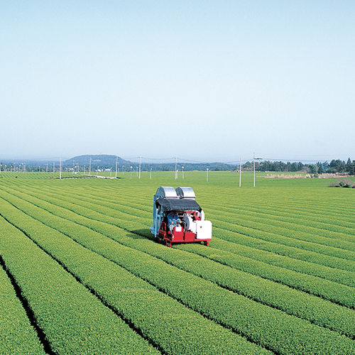
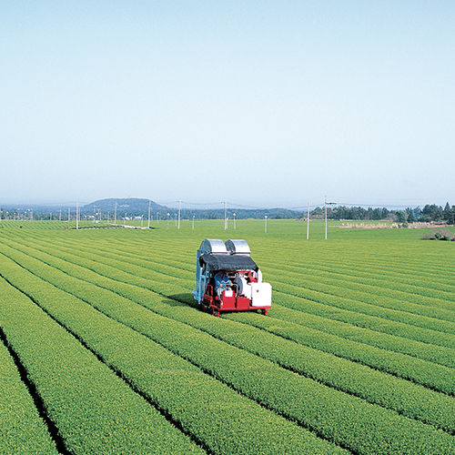
 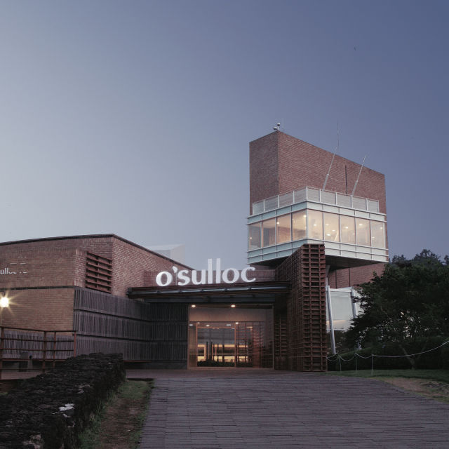
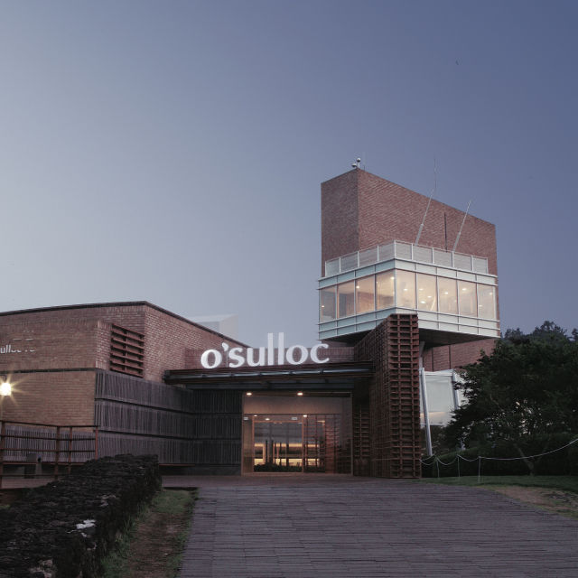


 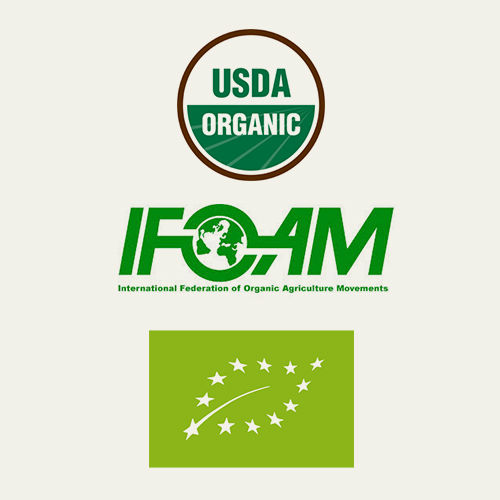
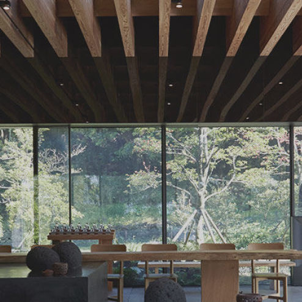
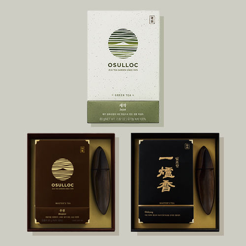
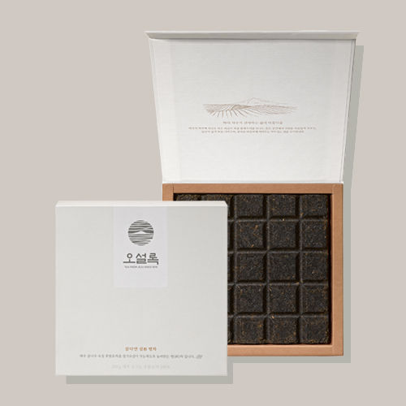
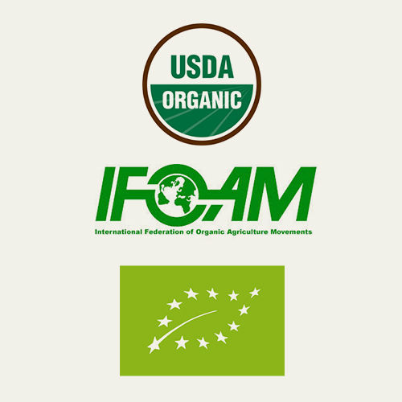
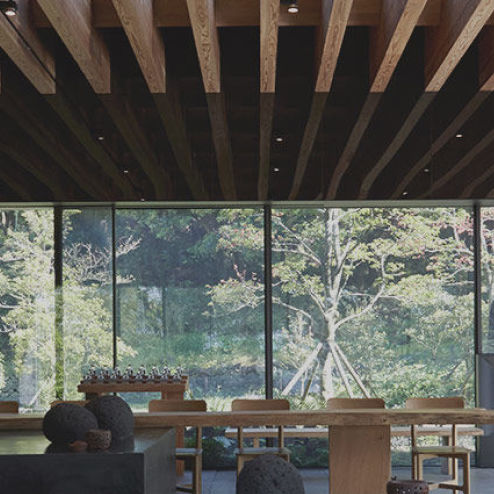
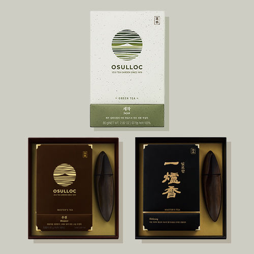
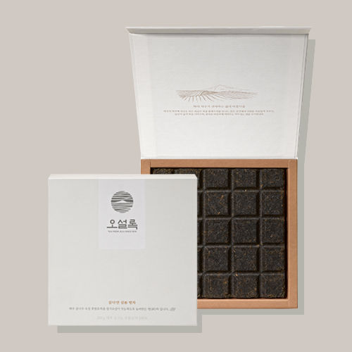

 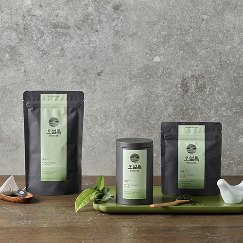
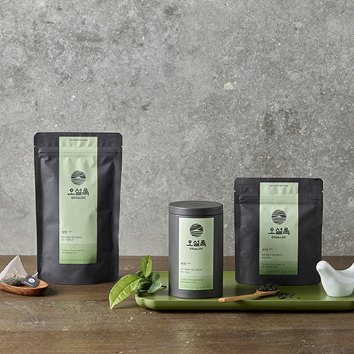
1979
우리의 전통 차문화 정립을 위한
차 사업의 시작 제주 돌송이차밭 부지
돌밭 개간 착공
1980
설록차 브랜드 발매
첫 번째 녹차 만수, 천수, 백수 출시
1983
국내 최초 차 전문 매거진
태평양 '설록차' 창간
1984
서광 차밭 조성
1995
과학적 기계관리가 용이한
한남차밭 조성
1999
설록명차 일로향 출시
2001
제주 오설록 티뮤지엄 개관
2002
차 업계 최초 전공장 HACCP 인증
2005
도심 속 작은 제주,
티 하우스 1호 서울 명동점 오픈
2009
일로향, 북아메리카 티 챔피언십
덖음차부문 1위 세작, 일본 시즈오카
세계녹차 콘테스트 금상
2010
유기농 인증 USDA-NOP, IFORM 획득
기타 국/내외 유기농 인증마크 획득
2013
제주 오설록 티스톤 오픈
2015
북아메리카 티 챔피언십 덖음차부문 1,2,3위 석권
2,500여개의 차 중에서 세작 1위에 이어 우전과 일로향 2,3위 석권
2016
세계 녹차 협회 금상
삼다연 삼 병차
2018
제주 프리미엄 티의 품격을 선보이는
티 하우스 '오설록 1979'
2020
세계 녹차 협회 World Tea Contest 금상
2020
독일 IF디자인 어워드 패키지 부문 수상
Osulluc Mall
오설록의 다양한 상품들을
온라인에서도 만나보세요.
마스터 블렌드
50,000원
45,000원 10%
마스터 블렌드
50,000원
45,000원 10%
마스터 블렌드
50,000원
45,000원 10%
마스터 블렌드
50,000원
45,000원 10%
마스터 블렌드
50,000원
45,000원 10%
마스터 블렌드
50,000원
45,000원 10%
마스터 블렌드
50,000원
45,000원 10%
마스터 블렌드
50,000원
45,000원 10%